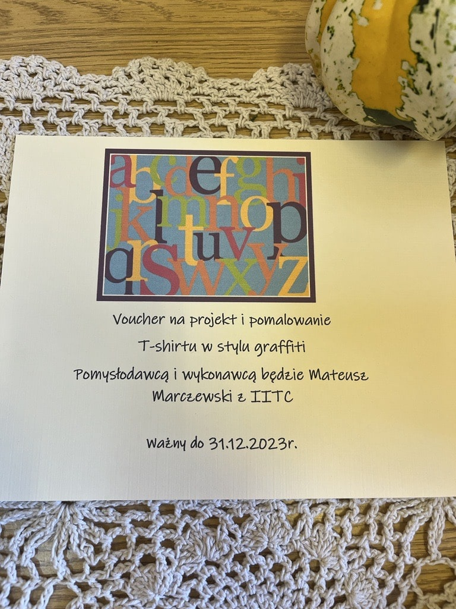
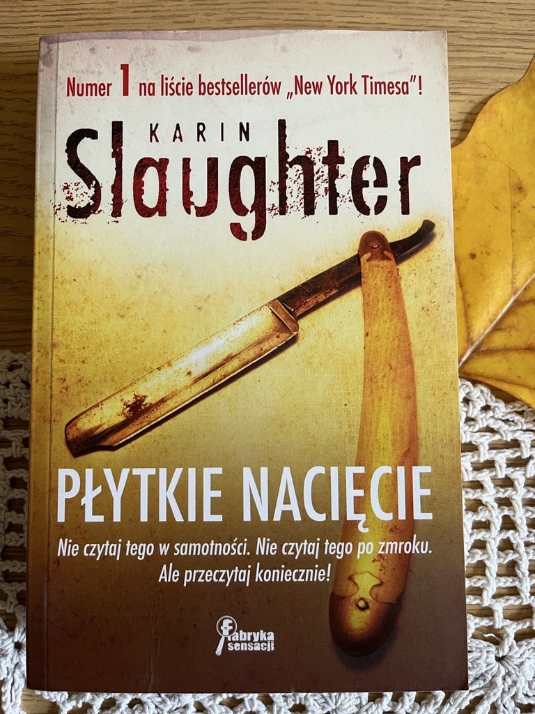
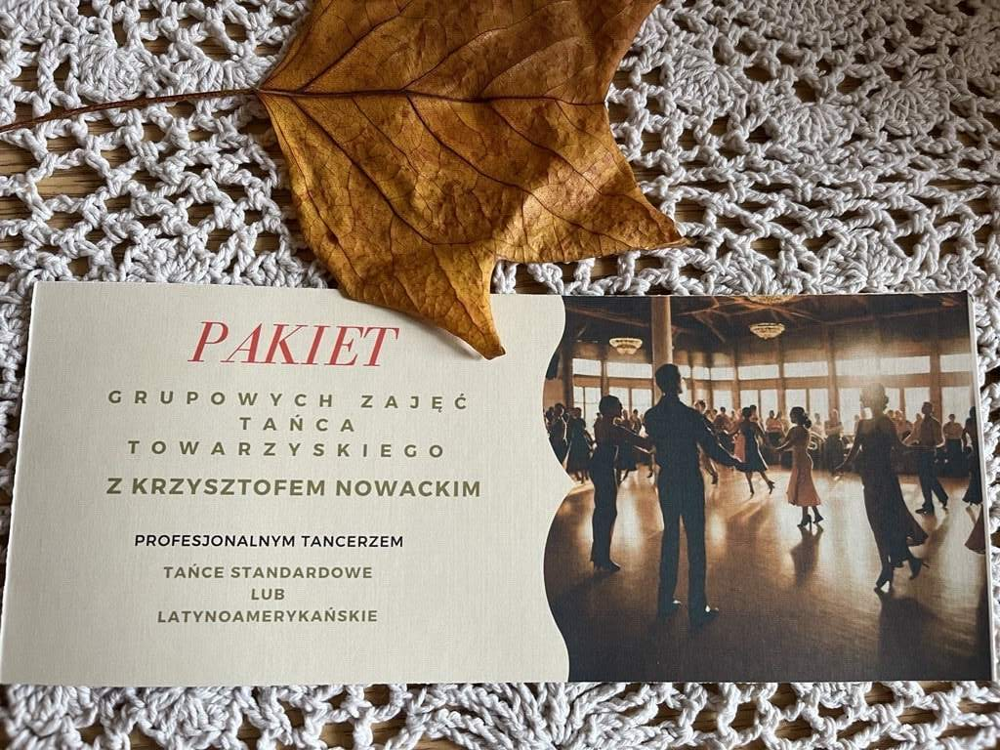
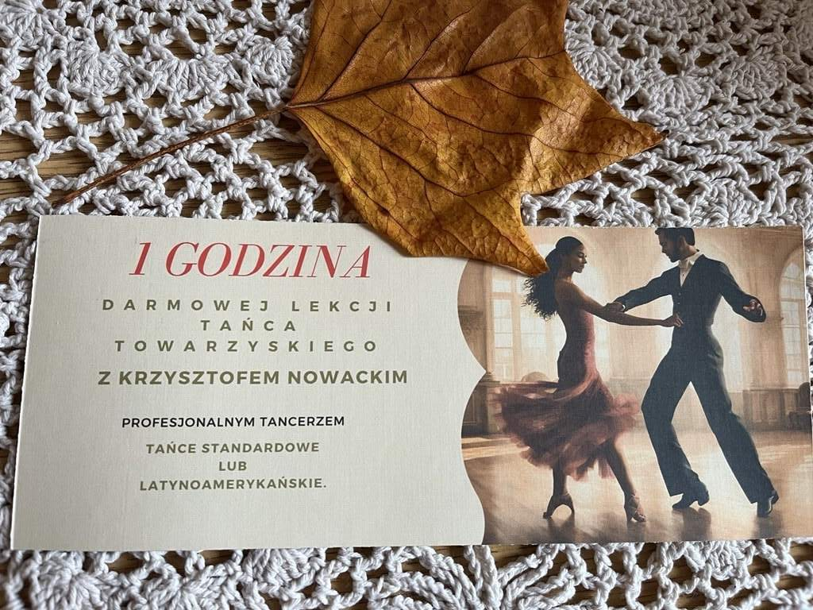
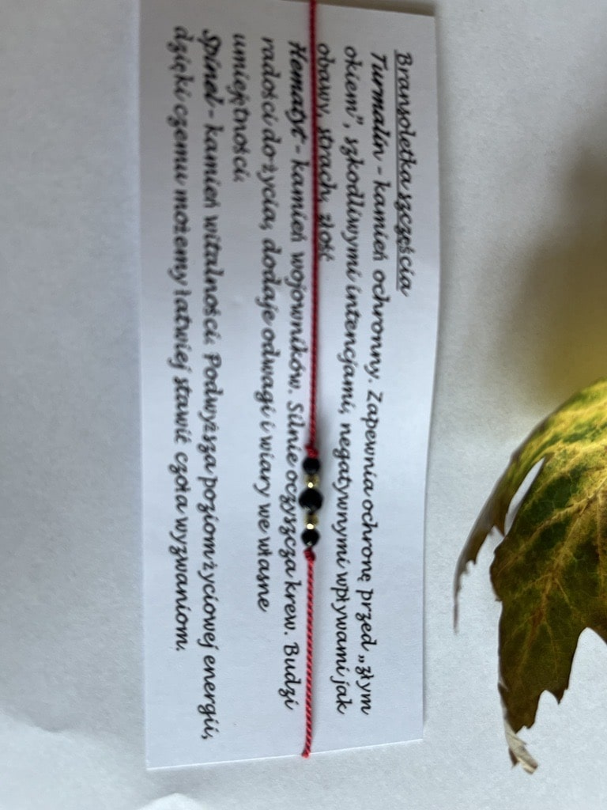

Ważne!
#ogłoszenie#ważne
Pomóżmy Link do zrzutki!
Prosimy wszystkich o wsparcie dla naszej nauczycielki, koleżanki, aby mogła być poddana terapii ratującej życie. Pieniądze ze zbiórki pomogą w długotrwałym leczeniu i rehabilitacji.
W imieniu całej społeczności Zespołu Szkół Politechnicznych w Łodzi z całego serca prosimy o wsparcie finansowe. Dziękujemy za każde, nawet najmniejsze wpłaty. Podarujmy Lidce szansę na życie!
#001Piłka Euro 2012
#inne
Piłkę przekazał Pan Tomasz Tomaszewski
#002Koszulka T-shirt
#ubranie
Koszulkę przekazała Pani Ewa Koneczna
#003Księga Smoków Polskich - Bartłomiej Grzegorz Sala
#książka
Książkę przekazała Pani Dorota Białkowska.
„Księga smoków polskich” to literacki i historyczno-etnograficzny opis 25 legendarnych bestii - smoków,
wielkich węży i podobnych im stworów. Autor, historyk i etnolog, kreśli ich wizerunki,
dokonując skrupulatnej charakterystyki potworów,
przytaczając opracowane na nowo swoim piórem legendy i podania, sięgając co źródeł postaci i wątków,
a nawet opisując miejsca związane z potworami.
Dzięki temu "Księga smoków polskich" łączy na swoich kartach elementy popularnonaukowe i stricte literackie,
będąc jednocześnie przemyślanym kompendium wiedzy o wyobrażeniach naszych przodków i ich kulturowych źródłach oraz zajmującym czytadłem,
wypełnionym opowieściami o krwiożerczych bestiach, zatrwożonych krainach, wyczekujących ratunku księżniczkach,
dzielnych rycerzach i sprytnych rzemieślnikach.
Całości dopełniają pełne baśniowej atmosfery ilustracje cenionego duetu rysowników Pawła Zycha i Witolda Vargasa.
#004Mitologia Nordycka - Neil Gaiman
#książka
Książkę przekazała Pani Dorota Białkowska.
Wielkie nordyckie mity to jeden z korzeni,
z których wyrasta nasza tradycja literacka -
od Tolkiena, Alana Garnera i Rosemary Sutcliff po „Grę o tron” i komiksy Marvela.
Stały się też inspiracją dla wielu obsypanych nagrodami bestsellerów Neila Gaimana.
Teraz sam Gaiman sięga w odległą przeszłość, do oryginalnych źródeł tych opowieści,
by przedstawić nam nowe, barwne i porywające wersje największych nordyckich historii.
Dzięki niemu bogowie ożywają - pełni namiętności, złośliwi, wybuchowi, okrutni - a
opowieść przenosi nas do ich świata - od zarania wszechrzeczy, aż po Ragnarok i zmierzch bogów.
Barwne przygody Thora, Lokiego, Odyna czy Frei fascynują współczesnego czytelnika,
a żywy, błyskotliwy język sprawia, że aż proszą się o to, by
czytać je na głos przy ognisku w mroźną gwiaździstą noc.
#005Efektor - Thomas Arnold
#książka
Książkę przekazała Pani Anna Buczek.
David Ross - starszy detektyw wydziału zabójstw z Cleveland - zostaje
zawieszony w obowiązkach służbowych za napaść na aresztowanego.
Na prośbę pewnej kobiety jedzie do Michigan, gdzie zniknął jego były "towarzysz broni",
z którym kilka dni wcześniej odbył dziwną rozmowę.
Wynajmowany przez Jamesa Adamsa pokój został przeszukany i zdewastowany,
jednakże kamery ochrony motelu nie zarejestrowały niczego podejrzanego. Ross dochodzi do wniosku,
że być może to sam Adams dokonał zniszczeń. Tylko dlaczego?
#0061984 - George Orwell
#książka
Książkę przekazała Pani Karolina Pel.
Penguin Readers is an ELT graded reader series for learners of English as a foreign language.
With carefully adapted text, new illustrations and language learning exercises,
the print edition also includes instructions to access supporting material online.
Titles include popular classics, exciting contemporary fiction, and thought-provoking non-fiction,
introducing language learners to bestselling authors and compelling content.
The eight levels of Penguin Readers follow the Common European Framework of Reference for language
learning (CEFR). Exercises at the back of each Reader help language learners to practise grammar,
vocabulary, and key exam skills. Before, during and after-reading questions test
readers' story comprehension and develop vocabulary.
Visit the Penguin Readers website
Exclusively with the print edition, readers can unlock online resources including a digital book,
audio edition, lesson plans and answer keys.
Winston Smith re-writes history for the Ministry of Truth in Oceania. Big Brother and
the Thought Police watch everyone for signs of Thought Crime. But when Winston falls
in love with Julia, he begins to have new ideas and hopes. Winston and Julia start to question
world that they live in - but Big Brother does not like independent thought.
#007The Godfather - Mario Puzo
#książka
Ksiązkę przekazała Pani Karolina Pel.
Penguin Readers is an ELT graded reader series. Please note that the eBook edition
does NOT include access to the audio edition and digital book. Written for learners of English
as a foreign language, each title includes carefully adapted text, new illustrations and
language learning exercises. Titles include popular classics, exciting contemporary fiction, and
thought-provoking non-fiction, introducing language learners to bestselling authors and
compelling content. The eight levels of Penguin Readers follow the Common European
Framework of Reference for language learning (CEFR). Exercises at the back of each Reader help
language learners to practise grammar, vocabulary, and key exam skills. Before, during and
after-reading questions test readers' story comprehension and develop vocabulary.
#008Strach stary i nowy - Thomas Arnold
#książka
Książkę przekazała Anna Buczek
Po ucieczce pierwszych ludzi z Terenów Centralnych i opanowaniu tych ziem przez olbrzymów,
gigantów i niszczycieli, Archeon pozostawał przesiąknięty strachem, śmiercią oraz pierwotnym złem
powołanym do życia przez Stwórców. Ku swej uciesze sprowadzali oni na świat kolejne monstra pustoszące
lądy i oceany, a ich jedynym celem była chęć niszczenia tego, co już istniało. Pożoga i zagłada trwały
setki lat, ale również i ta era, jak każda, miała swój początek oraz koniec, zapisując się w legendach.
Krew wsiąkła głęboko w ziemię, która na powrót przyjęła brunatną barwę, a rozkładające się ciała dały
początek nowemu życiu. Strach uleciał i rozproszył się w powietrzu niczym dym z przygaszonej pochodni.
W tym wszystkim jedynie Śmierć pozostała niezmienna. Cierpliwie czekała na odważnych, którzy postanowili
wrócić i ponownie określić się mianem Archeonów - pierwotnej nacji zamieszkującej niegdyś Tereny Centralne.
#009Projektowanie oprogramowania dla zupełnie początkujących. Owoce programowania. Wydanie V - Tony Gaddis
#książka
Książkę przekazał Pan Krzysztof Muszyński
Programowanie to nie tylko umiejętność pisania kodu oraz organizowania go w funkcje, procedury i moduły.
Nawet najbardziej finezyjne języki i najnowocześniejsze paradygmaty programowania nie zapewnią sukcesu,
jeśli projekt aplikacji jest nieprzemyślany, a jej logice brakuje... logiki. Z drugiej strony
poświęcenie odrobiny czasu na stworzenie dobrego projektu sprawi, że praca nad pisaniem kodu
będzie łatwiejsza, sama aplikacja będzie pracować lepiej i bardziej niezawodnie,
a późniejsze modyfikacje i rozwój oprogramowania przysporzą mniej problemów.
Jeśli planujesz napisać swoją pierwszą aplikację, sięgnij po tę książkę. Aby zrozumieć zawartą w
niej treść, nie trzeba znać żadnego języka programowania. Pokazano tu, jak działają programy i jak
można z ich wykorzystaniem rozwiązywać konkretne zadania. Wiedza o zasadach projektowania jest
przekazywana za pomocą pseudokodu i schematów blokowych. Omówiono zarówno podstawowe zagadnienia,
takie jak typy danych, zmienne, funkcje, jak i nieco bardziej zaawansowane: programowanie obiektowe,
tworzenie graficznych interfejsów użytkownika i pisanie programów sterowanych zdarzeniami.
W tym wydaniu książki wprowadzono wiele poprawek i uzupełnień, dotyczących między innymi
języków Java, Python i C++ oraz programowania aplikacji dla urządzeń mobilnych.
#010Bombka decoupage
#dekoracja
Dekorację przekazał Pan Bartosz Kondak.
Bombka decoupage z licznymi ozdobami i oryginalnym łańcuszkiem. Została wykonana przez Ciocię Pana Bartka Kondaka.
#011Piękne jajko ozdobione
#dekoracja
Dekorację przekazał Pan Bartosz Kondak.
Piękne jajko ozdobione zrobione masą samoutwardzalną, postarzone woskiem. Jajko zostało wykonane przez Ciocię Pana Bartka Kondaka.
#012Wydruki 3D
#dekoracja
Wydruki 3D - dynia, ośmiornica ze zdejmowanym kapeluszem,
Pokemony i coś dla miłośników Star Wars - R2-D2.
Modele można pokolorować według swojego uznania.
Można kupić cały zestaw lub wybrane elementy.
Zostały wydrukowane przez męża Pani Emilii Cieślak.
#013Obraz
#dekoracja
Obraz namalowany przez męża Pani Agnieszki Sikorskiej.
#014Obraz
#dekoracja
Obraz namalowany przez męża Pani Agnieszki Sikorskiej.
#015Obraz
#dekoracja
Obraz namalowany przez męża Pani Agnieszki Sikorskiej.
#016Naszyjnik
#biżuteria
Wisiorek na szyję w kształcie liścia w kolorze miedzianym - pięknie dopełni jesienną stylizację.
Wisiorek podarowała Pani Agnieszka Sikorska
#016Voucher na darmowy jednorazowy udział w zajęciach grupowych
#voucher
Darmowy jednorazowy udział w zajęciach grupowych w klubie Move&Mind.
Każdy znajdzie tam coś dla siebie - zarówno kobiety jak i mężczyźni:
od zajęć zdrowy kręgosłup, po boks, trening obwodowy czy zajęcia taneczne i wiele innych.
Voucher przekazało studio Move&Mind
#017Voucher na trening wprowadzający oraz konsultację EMS oraz analizę składu ciała
#voucher
Trening wprowadzający oraz konsultacja EMS i analiza składu ciała w klubie Move&Mind.
EMS to metoda treningowa, która wykorzystuje impulsy elektryczne do stymulowania mięśni w celu wywołania skurczów.
Impulsy elektryczne są dostarczane za pomocą elektrod na obszarach mięśniowych, które chcemy zaangażować.
EMS jest stosowany w celach treningowych i rehabilitacyjnych.
Voucher przekazało studio Move&Mind
#018Voucher na trening personalny z Lilą Sayed
#voucher
Trening personalny z Lilą Sayed w klubie Energy Fitness na Widzewie.
Ta fantastyczna trenerka posiada niespożytą energię, którą zaraża wszystkich dookoła.
Potrafi też dać niezły wycisk. Naprawdę warto spróbować swoich sił.
#019Voucher na harbatkę i ciastko na długiej przerwie z Panią Moniką Bogdan
#voucher
Voucher przekazała Pani Monika Bogdan.
#020Ciastko na godzinę wychowawczą dla całej klasy zrobione przez Panią Joanna Karolak
#voucher
Voucher przekazała Pani Joanna Karolak.
#021Voucher na projekt i pomowalonie T-shirtu w stylu graffiti
#voucher

portfolio autora: instagram
Voucher przekazał Mateusz Marczewski z IITC.
#022Witajcie w Rosji - Dmitry Glukhosky
#książka
Książkę przekazała Pani Anna Buczek.
Prowokacja. Skandal. Nowa literatura.
Długo oczekiwana i zaskakująca książka Dmitrija Glukhovsky'ego, autora międzynarodowego
bestsellera „Metro 2033”. W kilkunastu błyskotliwych opowiadaniach Glukhovsky wprawną ręką kreśli
alegoryczny portret swojej ojczyzny: państwa, w którym korupcja sięga szczytów władz,
kraju współrządzonego przez oligarchów i podporządkowanego ich interesom. „Witajcie w Rosji” to
iście wybuchowa mieszanka: fikcja miesza się tu z rzeczywistością, satyra i ironia sprawiają, że nie
wiadomo, czy śmiać się, czy płakać, a wszystko to w ulubionej przez Glukhovsky'ego
konwencji science fiction. To wyjątkowa książka, dotykająca ważnych problemów współczesnej Rosji w
sposób niezwykle oryginalny, dosadny i nad wyraz trafny.
Być może pierwsza od wielu lat próba uczciwego opowiedzenia o Rosji widzianej oczami nowego pokolenia.
#023Makaron w sakwach, czyli rowerem przez Andy i Kordyliery - Piotr Strzeżysz
#książka
Książkę przekazała Pani Agata Borowska-Jocz.
Książka posiada autograf!
O książce:
Polecieć na drugi koniec świata, aby męczyć się długą jazdą na rowerze i żywić się kolejnymi
porcjami makaronu z makaronem? Pedałować wiele dni przez zaśnieżone góry Alaski, czujnie
rozglądając się za głodnymi niedźwiedziami? I w dodatku robić to za własne pieniądze, a co gorsza,
dla przyjemności? Dla większości z nas to czyste szaleństwo, ale na szczęście nie dla Piotra Strzeżysza!
O autorze:
Autor po raz kolejny zadziwia nas swoim zapałem, energią i żelazną konsekwencją w dążeniu do celu. Jest przy tym rzadkim przykładem osoby wręcz emanującej otwartością na wszelkie przygody i chęcią poznawania nowych ludzi. Tym razem postanowił wyruszyć do obu Ameryk, a plonem tych wypraw jest książka opisująca, co przeżył, kogo spotkał na swojej drodze i dlaczego w życiu rowerzysty tak ważny jest tytułowy makaron.
#024Plac Senacki 6 PM - Vincent V. Severski
#książka
Książkę przekazała Pani Barbara Grochowska.
Niekwestionowany mistrz powieści szpiegowskiej powraca z zupełnie nowym thrillerem o narodzinach
imperium Putina. Październik 1990 roku. Z bazy Zapadnaja Lica na dalekiej północy ZSRR wypływa
najpotężniejszy okręt podwodny Dymitr Doński, dowodzony przez asa floty morskiej kapitana Golicyna.
Jednostka ma na pokładzie ogromny arsenał atomowy, który może zachwiać równowagą sił światowych mocarstw.
To mocno niepokoi Waszyngton i Londyn. Sojusznicy podnoszą stopień gotowości i analizują sytuację.
W ZSRR panują głasnost i pierestrojka, a u władzy jest Michaił Gorbaczow, który zapowiedział koniec zimnej wojny.
Amerykanie i Brytyjczycy za wszelką cenę muszą ustalić motywy Rosjan. Wszystkie drogi prowadzą do Helsinek.
Do gry wkracza MI6, który wysyła tam swojego najlepszego agenta, Martina.
Rozpoczyna się gra wywiadów, a w tle upada Związek Radziecki i rodzi się nowe imperium - podwaliny
państwa rosyjskiego Putina.
#025Niepokorni - Vincent V. Serverski
#książka
Książkę przekazała Pani Barbara Grochowska.
Po udanej operacji wywiezienia Michaiła Popowskiego z Rosji, Sara i Konrad wracają do Polski.
Podczas ich nieobecności kierownictwo Agencji Wywiadu wszczyna śledztwo w sprawie ich nielegalnej
akcji i rozwiązuje Wydział Q. Tymczasem w Europie wzrasta napięcie, a w Polsce zbliżają się przedterminowe wybory.
Opozycja prze do władzy za wszelką cenę. Informacje Popowskiego o rosyjskiej agenturze wpływu mogą
jednak doprowadzić do politycznego kataklizmu. Nowy szef rosyjskiego wywiadu Krugłow wraz z generałem
GRU Łopatinem planują wykorzystać ucieczkę Popowskiego do przebudowania sytuacji wewnętrznej w Polsce i Europie.
Wysyłają za nim Jagana i super szpiega Rudolfa. Konrad i Sara wiedzą doskonale, że informacje od
Popowskiego mogą doprowadzić w Polsce do wybuchu, więc nielegalnie zbierają Wydział Q do ostatniej akcji.
#026Rowerem przez II RP - Bernard Newman
#książka
Książkę prekazała Pani Anna Buczek.
Niezwykła podróż po kraju, którego już nie ma. Reportaż z 1934 roku.
Przedwojenna Polska oczami Brytyjczyka. Prawdziwa uczta dla obieżyświatów, rowerzystów i miłośników historii.
"Rowerem przez II RP. Niezwykła podróż po kraju, którego już nie ma. Reportaż z 1934 roku" - Taka podróż byłaby dziś niemożliwa… bez paszportu.
Niezwykła wyprawa rowerowa angielskiego dżentelmena do egzotycznego kraju, który powstał niedawno, ale ma spore ambicje.
Jego mieszkańcy stawiają się temu wariatowi Hitlerowi i chyba mają prawo. Ich państwo jest niemal trzy razy większe niż wyspa, z której przybył Newman!
Naszego podróżnika i jego dwukołowego towarzysza imieniem George czekają miejsca i ludzie, które wprawią go w osłupienie, zachwyt, czasem wzbudzą śmiech lub litość.
Ten zaskakujący wielki kraj nazywa się Polska. Ta Polska już nie istnieje, ale po niemal 90 latach możemy ją znowu oglądać oczami angielskiego pisarza, podróżnika
i… szpiega. W każdej z tych ról Bernard Newman sprawdza się znakomicie! Bernard Newman - brytyjski pisarz i podróżnik, w czasie pierwszej wojny światowej żołnierz i szpieg.
W okresie międzywojennym odwiedził ponad 60 krajów, które przemierzał zwykle na rowerze. Z tych podróży pisał znakomite, pełne brytyjskiego humoru reportaże.
Uważany też za autorytet z zakresu szpiegostwa. Jego wykładów słuchali nawet Adolf Hitler, Franklin Delano Roosevelt i Senat Stanów Zjednoczonych.
Z racji swojej wiedzy, doświadczeń wojennych i zamiłowania do podróżowania wielokrotnie oskarżany o szpiegostwo na rzecz rządu Jego Królewskiej Mości.
Newman kilka razy odwiedził Polskę. Jego unikatowy reportaż Rowerem przez II RP odsłania przed nami Polskę, jakiej nie znaliśmy i jakiej już nigdy nie będziemy mogli zobaczyć.
Po raz pierwszy po niemal 90 latach możemy o niej na szczęście przeczytać.
#027Antologia Poezji Miłosnej - Zespół Wydawnictwa IBIS
#książka
Książkę przekazała Pani Jadwiga Jezierna.
#028Szczeka, merda, mówi. Jak być najlepszym człowiekiem swojego psa - Zofia Zaniewska-Wojtków, Piotr Wojtków
#książka
Książkę przekazała Pani Anna Buczek.
ZROZUM, O CZYM SZCZEKA TWÓJ PIES… I ZOSTAŃ JEGO NAJLEPSZYM CZŁOWIEKIEM
Dlaczego twój pies podbiega do zupełnie obcych osób?
Co powiedziałby o psich parkach?
Czy istnieje coś takiego jak charakter rasy?
Nawet najwięksi psiarze mogą mieć kłopoty ze zrozumieniem swoich podopiecznych i ich zachowań.
Psy to istoty wrażliwe i skomplikowane. Potrafią odczuwać złość, smutek, radość. Bywają zazdrosne,
mogą czuć się winne, a emocje okazują na wiele różnych sposobów. Dobry opiekun pamięta o potrzebach
swojego przyjaciela i uczy się jego języka.
Zofia Zaniewska-Wojtków i Piotr Wojtków przedstawiają świat z perspektywy psów i pokazują, jak się
dogadać ze swoim pupilem. Autorzy pomogli już setkom tysięcy czworonogów przełamać lęki i ograniczyć
zachowania agresywne. Dzięki ogromnej wiedzy oraz latom praktyki rozumieją, o czym szczeka pies.
W książce opowiadają o tym, dlaczego psy są tak różnorodne, przypominają długą historię przyjaźni
ludzi i zwierząt i uczą, jak być najlepszym człowiekiem swojego psa.
#029Płytkie nacięcie - Karin Slaughter
#książka 
Książkę przekazała Pani Anna Buczek.
Druga część z kryminalnego cyklu, którego akcja rozgrywa się w hrabstwie Grant, na amerykańskiej prowincji.
To może być najtrudniejsza, a na pewno najbardziej bolesna - bo dotycząca dzieci - sprawa w karierze Jeffreya Tollivera,
komendanta policji w niewielkim Heartsdale w stanie Georgia. W tym samym czasie,
gdy Sara Linton - miejscowa doktor pediatrii i koroner - znajduje w publicznej toalecie poćwiartowane
zwłoki noworodka, policjant musi zapobiec morderstwu nastoletniego Marka Pattersona przez
domniemaną matkę dziecka, Jenny Weaver. Tylko dzięki interwencji policjanta udaje się uratować życie Marka.
Jenny, niestety, nie miała tyle szczęścia…
Jak wykaże sekcja zwłok, nie miała go również wcześniej - liczne ślady na ciele dziewczynki jasno wskazują,
że stosowano wobec niej najpotworniejsze formy przemocy, również seksualnej. Kto mógł się dopuścić takiego
bestialstwa wobec dziecka? Odpowiedź na to pytanie przejdzie najśmielsze oczekiwania Tollivera i Linton, a
skala okrucieństwa, jakie wyrządzono, na zawsze już położy się cieniem na historii na pozór spokojnego, normalnego miasteczka.
#030Rzeczywistość Edukacyjna. Tom 2. Wolnośc a wychowanie. Problemy, dylematy, kontrowersje - Sławomir Sztobryn, Krzysztof Kamiński
#książkaKsiążkę przekazał Pan Krzysztof Kamiński.
Książka posiada autograf autora!
#031BREAK POINT - STRACH. ODWAGA. PRZETRWANIE - Ollie Ollerton
#książka
Książkę przekazała Pani Anna Buczek.
Break Point to chwila, w której decydujesz, że nic nie stanie między tobą a twoim celem. Moment, w którym wychodzisz ze swojej strefy komfortu, aby iść naprzód. Żołnierze sił specjalnych nie są nadludźmi. Nie trafiają w cel z każdym strzałem. Kule się od nich nie odbijają. Mają takie same słabości i wątpliwości jak każdy z nas. Ale zwykli ludzie też mogą robić rzeczy niezwykłe, pod największą presją, w najtrudniejszych sytuacjach. W życiu Olliego Ollertona wszystko było ekstremalne, nie chodził na skróty. Jest byłym żołnierzem Sił Specjalnych. W wieku 18 lat wstąpił do Royal Marine Commandos. Brał udział w misjach w Irlandii Północnej i Iraku w ramach operacji Pustynna Burza. Po ukończeniu wyczerpującego 6-miesięcznego procesu selekcji SAS Ollie dołączył do Special Boat Service (SBS),gdzie służył 6 lat. Jego życie to dowód na to, że każdy może zrobić coś niesamowitego, ponieważ dopiero wtedy, gdy nadchodzi czas kryzysu, kiedy jesteś w punkcie załamania - dowiadujesz się, kim naprawdę jesteś. A jaki jest twój Break Point? Co musi się stać, żebyś odbił się od dna? Pamiętaj, że sekunda jest tylko tak długa albo tak krótka, jak czuje człowiek, który ją przeżywa.
#032FATUM - Karin Slaughter
#książkaKsiążkę przekazała Pani Anna Buczek.
A trupów będzie jeszcze więcej... Lena Adams nie mogła przypuszczać, że upragniony powrót do pracy zacznie się tak źle. Na komisariat policji w Heartsdale, spokojnym miasteczku w stanie Georgia, wtargnęło dwóch uzbrojonych mężczyzn, zabili trzech policjantów, kilku innych ranili, przetrzymują zakładników. Lena bardziej niż kiedykolwiek jest zdeterminowana, by rozwiązać tę sprawę - wśród zabitych jest jej wieloletni szef i przyjaciel, Jeffrey Tolliver. Kilka lat wcześniej komendant Tolliver wybiera się z doktor Sarą Linton na romantyczne wakacje na Florydę. Po drodze zmienia jednak zdanie i postanawia pokazać jej swoje rodzinne miasteczko. Miły urlop szybko zamienia się koszmar: w domu przyjaciół Jeffreya dochodzi do strzelaniny, ginie włamywacz. Sprawa zabójstwa okaże się trudniejsza, niż mogło się na początku wydawać; a co najgorsze, nie będzie jedyną, którą trzeba będzie rozwiązać. Trupów będzie przybywać. Upiorne miasteczko zmusi Jeffreya i Sarę, by zmierzyli się z jego najgłębiej skrywanymi tajemnicami. Czy to możliwe, by po latach ponownie dopadł ich koszmar Sylacugi?
#033Plusy i minusy - Stefan Buijsman
#książka
Książkę przekazała Pani Anna Buczek.
Książka dla wszystkich, którzy kiedykolwiek bali się matematyki. Stefan Buijsman - 24-letni filozof matematyki - jest jak Sheldon Cooper z "Teorii wielkiego podrywu". Robi wszystko trochę szybciej niż inni, nic więc dziwnego, że został doktorem w wieku 20 lat. A przecież w szkole niemiłosiernie się nudził i uważał, że algorytmy, różniczki i całki są kompletnie niepotrzebne w codziennym życiu. Dziś Stefan: zna teorię grafów i wie, dlaczego Netflix dokładnie rozpoznaje jego gust filmowy poznał statystykę i rozumie, że nie zawsze idealnie oddaje ona rzeczywistość, nie dziwi go więc, że wybory prezydenckie wbrew sondażom wygrał Donald Trump zna działanie algorytmów Google'a, więc wie, jak manipulują naszą wiedzą o świecie. Bądź jak Stefan! Uwierz, że każdy człowiek przychodzi na świat z umiejętnościami matematycznymi. Przeczytaj tę książkę i pozwól, by matematyka przestała być źródłem frustracji, a stała się fascynującą przygodą!
#034SNAJPER. Opowieść komandosa SEAL TEAM SIX. - Howard E. Wasdin, Stephen Templin
#książkaKsiążkę przekazała Pani Anna Buczek.
O książce „Jedyny łatwy dzień był wczoraj” hasło oddziałów Navy Seals Team Six - elitarny oddział Navy Seal. Ludzie, którzy wytropili i zabili najgroźniejszego człowieka świata - Osamę Bin Ladena. To pierwsza książka napisana przez komandosa Team Six i jedyna, która daje bezpośredni dostęp do świata elity elit służb specjalnych. Howard E. Wasdin pokaże wam, jak wygląda rekrutacja do Komando Foki. Pozwoli wam poczuć ból najbardziej morderczego treningu świata. Zdradzi szczegóły najtrudniejszych i najdramatyczniejszych misji (m.in. tej w Somalii, którą widzieliście w filmie Helikopter w ogniu). Opowie, jak z perspektywy komandosa wyglądał atak na kryjówkę Osamy Bin Ladena. To najbardziej wybuchowa książka tego roku.
#035Szóstka Wron - Leigh Bardugo
#książkaKsiążkę przekazała Pani Anna Buczek.
Sześcioro niebezpiecznych wyrzutków. Jeden niewykonalny skok. Przestępczy geniusz Kaz Brekker otrzymuje ofertę wzbogacenia się ponad wszelkie wyobrażenie - wystarczy w tym celu wykonać zadanie, która z pozoru wydaje się niewykonalne: - włamać się do niesławnego Lodowego Dworu (niezdobytej wojskowej twierdzy) - uwolnić zakładnika (a ten może rozpętać magiczne piekło, które pochłonie cały świat) - przeżyć dostatecznie długo, żeby odebrać nagrodę (i ją wydać) Kaz potrzebuje ludzi wystarczająco zdesperowanych, żeby wraz z nim podjęli się tej samobójczej misji, oraz dostatecznie niebezpiecznych, żeby ją wypełnili. Wie, gdzie ich szukać. Szóstka najbardziej niebezpiecznych wyrzutków w mieście - razem mogą być nie do zatrzymania. O ile wcześniej nie pozabijają się nawzajem.
#036Amerykańscy Bogowie - Neil Gaiman
#książkaKsiążkę przekazała Pani Dorota Białkowska.
Najsłynniejsza powieść Neila Gaimana, która zdobyła serca czytelników na całym świecie. „Amerykańscy bogowie” to opowieść o współczesnym świecie, o przemijaniu wartości, konflikcie pomiędzy tym co nowe a tradycjami, które powstawały przez wieki. Opowiada o pasji, miłości, nienawiści i śmierci, o codziennych problemach i rozterkach trapiących nas ludzi na początku nowego tysiąclecia. Po trzech latach spędzonych w więzieniu Cień ma wyjść na wolność. Ale w miarę jak do końca odsiadki pozostają tygodnie, godziny, minuty, sekundy, czuje narastający niepokój. Na dwa dni przed zakończeniem wyroku, jego żona, Laura, ginie wypadku samochodowym w tajemniczych okolicznościach - wszystko wskazuje na zdradę małżeńską. Oszołomiony Cień powraca do domu, gdzie spotyka tajemniczego Pana Wednesday, twierdzącego, iż jest uchodźcą wojennym, byłym bogiem i królem Ameryki. Razem wyruszają oni w niesamowitą podróż przez Stany, rozwiązując zagadkę morderstw, które co zimę są dokonywane w małym amerykańskim miasteczku. Jednak podąża za nimi ktoś, z kim Cień musi zawrzeć pokój...
#037Niedźwiedź i smok - Tom Clancy
#książkaKsiążkę przekazała Pani Anna Buczek.
Gdy świat traci sterowność, nadchodzi czas prawdziwych mężczyzn. W różnych częściach świata dochodzi do serii pozornie ze sobą niepowiązanych zdarzeń: na Syberii zostały odkryte ogromne złoża ropy i złota, Stany Zjednoczone prowadzą trudne negocjacje handlowe z Chinami, w samych Chinach mniejszość chrześcijańską spotykają represje - zostaje zamordowany nuncjusz papieski, a w Moskwie, dochodzi do zamachu, którego celem był rosyjski prezydent. Rośnie napięcie na osi Stany Zjednoczone - Chiny. Tymczasem Ameryka nie ma już poważnego atutu strategicznego jakim były rakiety międzykontynentalne. Nie ma ich również Rosja - teraz sojusznik Stanów Zjednoczonych i nowy członek NATO. Prezydentem Stanów Zjednoczonych jest Jack Ryan i to on musi stawić czoło międzynarodowemu konfliktowi, który wiedzie wprost ku kolejnej wojnie światowej.
#038Tęczowa chusta zrobiona na szydełku
#ubranie
Chusta przekazana i zrobiona przez Panią Katarzynę Sawko.
Chusta w kolorach tęczy wykonana na szydełku - wzorem ażurowym. Jej energetyczne kolory ożywią każdą stylizację. Została podarowana na licytację przez Panią Katarzynę Sawko.
#039Chusta robiona na szydełku w kolorachy morskich
#ubranie
Chusta wykonana na szydełku mchem w kolorach od morskiego po różowy.
Jest bardzo ciepła i na pewno przyda się w nadchodzące chłodne dni.
Została podarowana na licytację przez Panią Katarzynę Sawko.
#040Chusta pomarańczowo-turkusowa zrobiona na szydełku
#ubranie
Chusta wykonana na szydełku mchem w pięknych żywych kolorach od niebieskiego przez pomarańcz po limonkowy.
Nadaje się zarówno na cieplejsze jak i na chłodniejsze dni.
Została zrobiona przez Panią Joannę Karolak.
#041Chusta robiona na szydełku w odcieniach koloru niebieskiego
#ubranie
Chusta wykonana na szydełku ściegiem ażurowym - w odcieniach od ciemnego niebieskiego po wrzosowy - będzie stanowiła piękne dopełnienie jesiennej stylizacji.
Chusta przekazana i zrobiona przez Panią Joannę Karolak.
#042Album muzyczny nr 200 "...jak siebie samego...
etiuda filmowa" - Sylwester Jędruszkiewicz
#inne
Praca dyplomowa Pana Sylwestra Jędruszkiewicza na studiach podyplomowych na wydziale Realizacja Obrazu Filmowego,
Telewizyjnego i Fotografii w Wyższej Szkole Sztuki i Projektowania w Łodzi - sierpień 2016.
Album nr 200, autorstwa Pana Sylwestra Jędruszkiewicza "...jak siebie samego...
etiuda filmowa"
#043Ozdobna zakładka do książek
#dekoracja
Ozdobna zakładka do książki w kształcie pióra z zawieszką z koralików i sową.
Zakładkę podarowała Pani Anna Buczek
#044Piękne jajko ozdobione
#dekoracja
Dekorację przekazał Pan Bartosz Kondak.
Piękne jajko ozdobione zrobione masą samoutwardzalną, postarzone woskiem. Jajko zostało wykonane przez Ciocię Pana Bartka Kondaka.
#045Piękne jajko ozdobione
#dekoracja
Dekorację przekazał Pan Bartosz Kondak.
Piękne jajko ozdobione zrobione masą samoutwardzalną, postarzone woskiem. Jajko zostało wykonane przez Ciocię Pana Bartka Kondaka.
#046Piękne jajko ozdobione
#dekoracja
Dekorację przekazał Pan Bartosz Kondak.
Piękne jajko ozdobione zrobione masą samoutwardzalną, postarzone woskiem. Jajko zostało wykonane przez Ciocię Pana Bartka Kondaka.
#047Muszla
#dekoracja
Dekorację przekazał Pan Bartosz Kondak.
Piękna ozdobiona muszla. Wykonana przez Ciocię Pana Bartka Kondaka.
#048Termofor Miś Hoshi
#inne
Przepiękny termofor Miś Hoshi - przytuli i ogrzeje w chłodne dni…
Przytrzyma za łapkę i wysłucha Twoich skarg i marzeń.
Nigdy nie zdradzi Twoich tajemnic.
Termofor podarowała Pani Jadwiga Jezierna.
#049Miodek
#inne
Słoik miodu osłodzi nawet najbardziej smutny dzień, a w razie choroby pozwoli szybciej wrócić do zdrowia.
Miodek podarował Pan Sylwester Paczesny z pasieki swojego zięcia.
#050Płócienna torba
#inne
Płócienna torba - niezbędnik dla wszystkich którzy chcą być Eko.
Można ją dowolnie ozdobić np. malując czy naszywając coś wyjątkowego.
Torbę uszyła Pani Iwona Wodzisławska-Luniak
#051Płócienna torba
#inne
Płócienna torba - niezbędnik dla wszystkich którzy chcą być Eko.
Można ją dowolnie ozdobić np. malując czy naszywając coś wyjątkowego.
Torbę uszyła Pani Iwona Wodzisławska-Luniak
#052Płócienna torba
#inne
Płócienna torba - niezbędnik dla wszystkich którzy chcą być Eko.
Można ją dowolnie ozdobić np. malując czy naszywając coś wyjątkowego.
Torbę uszyła Pani Iwona Wodzisławska-Luniak
#053Płócienna torba
#inne
Płócienna torba - niezbędnik dla wszystkich którzy chcą być Eko.
Można ją dowolnie ozdobić np. malując czy naszywając coś wyjątkowego.
Torbę uszyła Pani Iwona Wodzisławska-Luniak
#054Płócienna torba
#inne
Płócienna torba - niezbędnik dla wszystkich którzy chcą być Eko.
Można ją dowolnie ozdobić np. malując czy naszywając coś wyjątkowego.
Torbę uszyła Pani Iwona Wodzisławska-Luniak
#055Świeczniki w kształcie reniferów
#dekoracja
Świeczniki na tealighty w kształcie reniferów - będą ozdobą zarówno świątecznego stołu,
jak i dekoracją w zimowe wieczory lub w czasie kolacji przy świecach.
Świeczniki zrobił mąż Pani Emilii Cieślak.
#056Kwiatki z metalu
#dekoracja
Kwiatki z metalu - będą ozdobą każdego wnętrza.
Kwiatki zrobił mąż Pani Emilii Cieślak.
#057Ozdoba w niebieskie kwiaty
#dekoracja
Ozdoba w niebieskie kwiaty - na pewno ożywi każde wnętrze.
Ta piękną ozdobę przekazała Pani Agnieszka Kłosińska.
#058Zestaw kadzidełek
#dekoracja
Zestaw kadzidełek - polecamy je każdemu kto ma ochotę zakosztować naprawdę wyjątkowego zapachu.
Zestaw podarowała Pani Agata Borowska - Jocz.
#059Piękna niebieska torebka z cekinami i różami
#ubranie
Piękna niebieska torebka z cekinami i różami -
nadaje się zarówno do codziennych stylizacji jak i na bardziej eleganckie wyjście np. do teatru.
Torebkę podarowała Pani Agnieszka Kłosińska
#060Pudełeczko w znaki zodiaku
#dekoracja
Piękne pudełeczko na różne drobiazgi w granatowym kolorze ze złotymi znakami zodiaku.
Pudełeczko zostało przekazane przez tajemniczego darczyńcę
#061Koszulka Trenerska
#ubranie
Koszulka polo trenerska Anilana Łódź (piłka ręczna)
rozmiar 2xl-3xl.
Przekazana przez Pana Tomasza Matulskiego
#062Maskotka - Żyrafka
#inne
Maskotka - Żyrafka - wystarczy spojrzeć jej w oczy i już każdy chce ją mieć.
Została podarowana na licytację przez córkę Pana Szymona Rogowskiego.
#063Miś z serduszkiem
#inne
Czy jest osoba, która nie zachwyci się misiem z serduszkiem? - na pewno nie.
Miś jest uniwersalny - na każdą okazję np.
na prezent dla siostry, na randkę, na Walentynki…
Został podarowany na licytację przez córkę Pana Szymona Rogowskiego.
#064Miś panda
#inne
Miś Panda - chyba nie trzeba nikogo zachęcać do licytacji - jest po prostu piękny
Został podarowany na licytację przez córkę Pana Szymona Rogowskiego.
#065Pluszowa Myszka Miki
#inne
Pluszowa Myszka Miki - nic dodać nic ująć. Trzeba ją mieć.
Został podarowany na licytację przez córkę Pana Szymona Rogowskiego.
#066Pluszowy motylek
#inne
Piękny pluszowy motylek w energetycznych kolorach - idealnie sprawdzi się jako przytulanka lub poduszka w podróży.
Został podarowany na licytację przez córkę Pana Szymona Rogowskiego.
#067Owieczka na szydełku w odcieniach białego i szarego
#inne
Owieczka na szydełku w odcieniach białego i szarego z kokardką pod szyją.
Bardzo pięknie wykonana z dbałością o wszystkie szczegóły. Nie można się nie zachwycić.
Maskotka została zrobiona przez Panią Agnieszkę Knul (mamę naszego ucznia).
#068Owieczka na szydełku w odcieniach białego i różowego
#inne
Owieczka na szydełku w odcieniach białego i różowego z kokardką pod szyją.
Bardzo pięknie wykonana z dbałością o wszystkie szczegóły.
Nie można się nie zachwycić.
Maskotka została zrobiona przez Panią Agnieszkę Knul (mamę naszego ucznia).
#069Króliczek na szydełku w białym sweterku
#inne
Króliczek na szydełku w białym sweterku skradnie serce każdego - nie da się przejść obok niego obojętnie.
Maskotka została zrobiona przez Panią Agnieszkę Knul (mamę naszego ucznia).
#070Peruka w kolorze blond
#ubranie
Peruka w kolorze blond - kto nie chciałby choć raz nie mieć burzy loków na głowie?
A do tego jeszcze piękna biała kokarda z tiulu - wszyscy wyglądają w niej zjawiskowo.
Perukę przekazała Pani Agnieszka Kłosińska.
#071Torba na laptopa z szarego filcu
#inne
Torba na laptopa z szarego filcu - przyda się każdemu kto potrzebuje się przemieszczać z laptopem,
do tego jest lekka więc nie będzie stanowiła dodatkowego ciężaru.
Kolor bardzo uniwersalny.
Torbę podarował Pan Marek Włodarczyk.
#072Granatowa torba na laptopa
#inne
Granatowa torba na laptopa z materiału, który nie pozwoli zmoknąć naszemu laptopowi,
a do tego w środku wiele przydatnych kieszeni na telefon, długopisy itp.
Torbę podarował Pan Marek Włodarczyk.
#073Świeczka z wosku w kształcie słonia
#dekoracja
Świeczka z wosku w kształcie słonia -
nie tylko przyda się do zrobienia odpowiedniego nastroju,
ale będzie także ozdobą każdego wnętrza.
Świeczkę przekazał Pan Marek Włodarczyk.
#074Lalka na szydełku
#dekoracjaLalka na szydełku, posiada ruchome kończyny (można je dowolnie wyginać) i włosy wykonane z wełny czesankowej. Lalka posiada też wyhaftowane oczy. Całość dopełniają piękna jeansowa sukienka i eleganckie wiązane buty. Ucieszy oko zarówno dziecka, jak i kolekcjonera. Jej niezaprzeczalnym atutem jest to, że drugiej takiej nie ma na całym świecie
Laleczkę zrobiła Pani Joanna Karolak
#075Obraz autorswa Pana Piotra Pluskoty
#dekoracja
Obraz namalował i przekazał Pan Piotr Pluskota
#076CZAPKA NEONÓWKA
#ubranieCZAPKA NEONÓWKA - każdemu doda blasku, energii podczas jesiennych dni. Większy rozmiar powoduje, że fryzura "pod" nie ucierpi
Czapka zostałą przekazana i stworzona przez Panią Monikę Bogdan
#077JESIENNY NIEZBĘDNIK DLA KAŻDEGO
#ubranieJESIENNY NIEZBĘDNIK DLA KAŻDEGO - zielone mitenki chroniące przed chłodem, ubrany kubeczek na gorącą herbatkę, świeczuszka w wełnianej osłonce dająca klimat podczas czytania Kasi Grocholi.
Zestaw został przekazany i stworzona przez Panią Monikę Bogdan
#078Piękny wianek jesienny
#dekoracja
Piękny wianek jesienny o średnicy 25 cm - do powieszenia lub położenia - sprawi,
że każde wnętrze nabierze jesiennego charakteru.
Wianek przyjechał do nas aż ze Śląska,
został podarowany przez Panią Magdalenę Sawicz ze studia Botaniczne Historie.
#079Piękny wianek bożonarodzeniowy
#dekoracja
Piękny wianek bożonarodzeniowy w biało czerwonych kolorach ze wstążkami.
Idealnie nadaje się do powieszenia na drzwiach - z nim święta będą piękniejsze.
Wianek przyjechał do nas aż ze Śląska,
został podarowany przez Panią Magdalenę Sawicz ze studia Botaniczne Historie.
#080Voucher na śniadanie z dyrektorem
#voucher
Śniadanie z dyrektorem
Ważny do końca roku szkolnego 2023/2024
(termin śniadania ustalony z trzydniowym wyprzedzeniem)
#081Wycieczka do Muzeum dzieci Polskich
#voucher
Voucher na wycieczkę dla całej klasy do Muzeum dzieci Polskich w Łodzi.
W ramach warsztatów przewidziano dla uczniów podarunki niespodzianki
#082Wycieczka zawodowa na Politechnikę Łódzką
#voucher
Wycieczkę poprowadzi pan Szymon Rogowski
#083Wycieczka zawodowa na Politechnikę Łódzką
#voucher
Wycieczkę poprowadzi pan Szymon Rogowski
#084Wycieczka zawodowa na Politechnikę Łódzką
#voucher
Wycieczkę poprowadzi pan Szymon Rogowski
#085Dzień bez Sprawdzianów i Kartkówek
#voucher
Voucher dla klasy na dzień bez Sprawdzianów i Kartkówek
#086Dzień bez Pytania
#voucher
Voucher dla klasy na dzień bez Pytania
#087Wycieczka klasowa do Muzeum Włókiennictwa
#voucher
Poznaj początki Łodzi przemysłowej i nie tytlko...
Terminy do wyboru: - 08.11.2023 - 15.11.2023 - 22.11.2023 - 29.11.2023
#088Warsztaty na Politechnice Łódzkiej
#voucher
Warsztaty stacjonarne w Pracowni aktywnego korzystania z Technologii Politechniki Łódzkiej
Termin: 01.12.2023r. godz. 12.00
#089Kurs Jazdy na monocyklu
#voucher
Kurs przeprowadzi uczeń klasy 2F Jakub Rzeźniczak
#090Szybki kurs układania Kostki Rubika
#voucher
Kurs przeprowadzi Pan Bartek Kondak
#091Kurs z Podstaw teorii muzycznej
#voucher
czytanie nut, interwały, gamy itp.
Kurs przeprowadzi uczeń klasy 2F Jakub Rzeźniczak
#092Usługa trychologiczna z badaniem
#voucherUsługa trychologiczna z badaniem skóry głowy ( idealna dla osób zmagających się z wypadaniem włosów lub chorobą skóry) w TrychoClinica.
Usługa została przekazana na licytację przez mamę naszego
ucznia Panią Magdalenę Wojtaszewską
#093Pudełko z biżuterią z Peru
#dekoracja
Jeśli ktoś lubi oryginalne i niepowtarzalne rzeczy to taki zestaw jest dla Niego. W pudełku znajdziecie oryginalne bransoletki, kolczyki czy naszyjnik.
Pudełeczko z tymi wszystkimi pięknymi rzeczami podarowała Kobieta o Ogromnym Sercu.
#094Zestaw ozdób bożonarodzeniowych
#dekoracja
Zestaw ozdób bożonarodzeniowych w kolorach białym i czerwonym ze sznurka do makramy i drewnianych koralików. Zestaw podarowała na licytację mama naszego ucznia Pani Agnieszka Pabich.
#095Zestaw ozdób bożonarodzeniowych
#dekoracja
Zestaw ozdób bożonarodzeniowych w kolorach białym ze sznurka do makramy i drewnianych koralików. Zestaw podarowała na licytację mama naszego ucznia Pani Agnieszka Pabich.
#096koszyczek słodkości
#inneKoszyczek ze słodkościami obok którego nie przejdzie obojętnie żaden miłośnik słodyczy a do tego maluteńka maskotka, która skradnie serce każdego. Ofiarodawca chciał pozostać anonimowy.
#095Wianek Bożonarodzeniowy
#dekoracja
Wianek świąteczny z Mikołajem utrzymany w tonacji biało srebrnej. Będzie na pewno świetną dekoracją w czasie zbliżających się świąt. Ofiarodawca chciał pozostać anonimowy.
#096Voucher na pakiet lekcji tańca
#voucher 
Pakiet grupowych zajęć tańca towarzyskiego z Krzysztofem Nowackim - profesjonalnym tancerzem a przy okazji uczniem naszej szkoły 😉 Krzysztof jest zdobywcą między innymi 7 Miejsca na Mistrzostwach Polski jest tancerzem tańca towarzyskiego zarówno w tańcach standardowych jak i latynoamerykańskich.
#097Voucher na godzinę lekcji tańca
#voucher 
1 godzina darmowej lekcji tańca towarzyskiego z Krzysztofem Nowackim - profesjonalnym tancerzem a przy okazji uczniem naszej szkoły 😉 Krzysztof jest zdobywcą między innymi 7 Miejsca na Mistrzostwach Polski jest tancerzem tańca towarzyskiego zarówno w tańcach standardowych jak i latynoamerykańskich.
#098Kazimierz nad Nerem w maforionie Królowej
#książkaKsiążka autorstwa Pani Bogusławy Białek(mamy naszego ucznia) z autografem. Książka ta jest monografią Kazimierza położonego nad Nerem, w gm. Lutomiersk. Powstała w związku z tegorocznym jubileuszem czterechsetlecia obrazu Matki Bożej w Kazimierzu. Wydanie ekskluzywne, bogato ilustrowane.
#099Bransoletka szczęścia
#biżuteria
Spinei - kamień witalności. Podwyższa poziom życiowej energii, dzięki czemu możemy łatwiej stawić czoła wyzwaniom
Dalmatyński - kamień dobrobytu, pobudza twórcze myślenie oraz inspiruje do działania
Jaspis - kamień zdrowia, poprawia atmosferę w pracy i w rodzinie. Pozytywnie wpływa na zdrowie fizyczne i emocjonalne.
Bransoletka została podarowana przez dwie Kobiety o Ogromnych Sercach.
#100Bransoletka szczęścia
#biżuteria
Spinei - kamień witalności. Podwyższa poziom życiowej energii, dzięki czemu możemy łatwiej stawić czoła wyzwaniom
Hematyt- kamień wojowników. Silnie oczyszcza krew. Budzi radość do życia, dodaje odwagi i wiary we własne umiejętności
Granat - kamień kreatywności. Jest to kamień tworzenia, rozpoczynanie czegoś nowego. Wpływa na wiarę w siebie i dążenie do celów.
Bransoletka została podarowana przez dwie Kobiety o Ogromnych Sercach.
#101Bransoletka szczęścia
#biżuteria
Hematyt- kamień wojowników. Silnie oczyszcza krew. Budzi radość do życia, dodaje odwagi i wiary we własne umiejętności
Słoneczny - kamień życia. Daje siłę i energię do życia, pomaga przezwyciężyć lęki, niepewność, brak wiary w siebie i łagodzi depresję.
Bransoletka została podarowana przez dwie Kobiety o Ogromnych Sercach.
#102Bransoletka szczęścia
#biżuteria
Spinei - kamień witalności. Podwyższa poziom życiowej energii, dzięki czemu możemy łatwiej stawić czoła wyzwaniom
Dalmatyński - kamień dobrobytu, pobudza twórcze myślenie oraz inspiruje do działania
Jaspis - kamień zdrowia, poprawia atmosferę w pracy i w rodzinie. Pozytywnie wpływa na zdrowie fizyczne i emocjonalne.
Bransoletka została podarowana przez dwie Kobiety o Ogromnych Sercach.
#103Bransoletka szczęścia
#biżuteria
Turmalin-kamień ochronny. Zapewnia ochronę przed „złym okiem”, szkodliwymi intencjami, negatywnymi wpływami jak obawy, strach, złość
Spinei - kamień witalności. Podwyższa poziom życiowej energii, dzięki czemu możemy łatwiej stawić czoła wyzwaniom.
Bransoletka została podarowana przez dwie Kobiety o Ogromnych Sercach.
#104Bransoletka szczęścia
#biżuteria 
Turmalin-kamień ochronny. Zapewnia ochronę przed „złym okiem”, szkodliwymi intencjami, negatywnymi wpływami jak obawy, strach, złość
Hematyt- kamień wojowników. Silnie oczyszcza krew. Budzi radość do życia, dodaje odwagi i wiary we własne umiejętności
Spinei - kamień witalności. Podwyższa poziom życiowej energii, dzięki czemu możemy łatwiej stawić czoła wyzwaniom.
Bransoletka została podarowana przez dwie Kobiety o Ogromnych Sercach.
#105Szczotka do włosów
#voucherCudowna szczotka do włosów bardzo dobrej marki wraz z rabatem na koloryzację w TrychClinikę.
Przedmiot został podarowany przez TrychoClinica.
#106Chustka na turban
#voucher
Chusty na turbany trychologiczne autorstwa mamy naszego ucznia Pani Magdaleny Wojtaszewskiej. Chusta posiada filtr na
Słońce uv 50+ z odporowadzaniem wilgoci.
#107Gumka 100% jedwab
#inne
Gumka 100% jedwab produkt polski, rozmiar XXL. Została przekazana na licytację przez mamę naszego ucznia Panią Magdalenę Wojtaszewską z TrychoClinica.
#108Partia szachów z Dyrektorem ZSP
#voucher
Partia szachów z Dyrektorem ZSP.
Do wykorzystania w roku szkolnym 2023/2024*.
*po wcześniejszym umówieniu terminu.
#109Warsztaty z dyrektorem na temat stresu
#voucher
stres, a zarządzanie sobą w czasie
Godzinne warsztaty z Dyrektorem szkoły.
Termin do ustalenia z z klasą w roku szkolnym 2023/2024